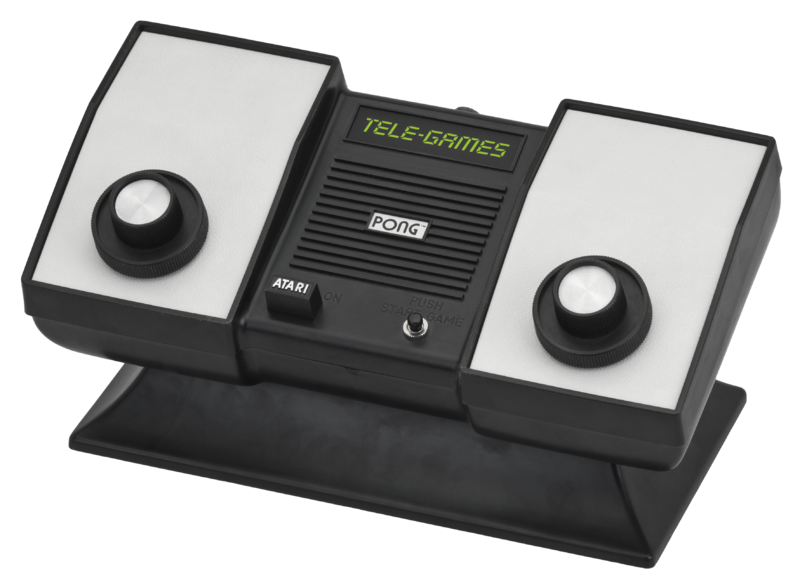

Atari Consoles
Atari Pong
(1972)

Atari Pong, released in 1972, is one of the earliest and simplest video games. Imagine a table tennis game with two paddles and a ball, but on a screen. Players use knobs to control the paddles and volley the ball back and forth. Though simple, it was wildly popular and helped launch the entire video game industry.
Atari 2600
(1977)

The Atari 2600, originally called the Atari Video Computer System (Atari VCS), was a hugely popular home video game console released in 1977. It helped bring arcade-style gaming into people's living rooms. The 2600 used cartridges for games, which could be swapped out to play different titles. It came with joystick controllers and could display simple blocky graphics and a limited number of colors. While the games seem very basic today, the 2600 was a revolutionary product that laid the foundation for the modern video game console industry.
Atari 5200
(1982)

The Atari 5200, released in 1982, was Atari's attempt to compete with more advanced consoles. It boasted superior graphics to the popular Atari 2600, but there were some drawbacks. The 5200's games were on larger cartridges and weren't compatible with the massive library of 2600 games, which hurt sales. While some great games were available for the 5200, it wasn't as commercially successful as its predecessor.
Atari 7800
(1986)

The Atari 7800, released in 1986, was Atari's attempt to recapture the home console market after the struggles of the Atari 5200. Unlike the 5200, the 7800 had a key advantage: backwards compatibility. It could play almost all the Atari 2600 games, giving users a huge library of titles at launch. It also boasted improved graphics and sound over the 2600. However, by 1986, the Nintendo Entertainment System (NES) was already dominating the market, and the 7800 couldn't compete. While it had some good games, it wasn't a major commercial success.
Atari Jaguar
(2001)

An ambitious but ill-fated console. Marketed as the first 64-bit system, it boasted impressive specs, but complexity and bugs made development a nightmare. Despite a strong launch title (Doom), a lack of third-party support due to development challenges and competition from established giants like Sega and Nintendo led to its downfall.